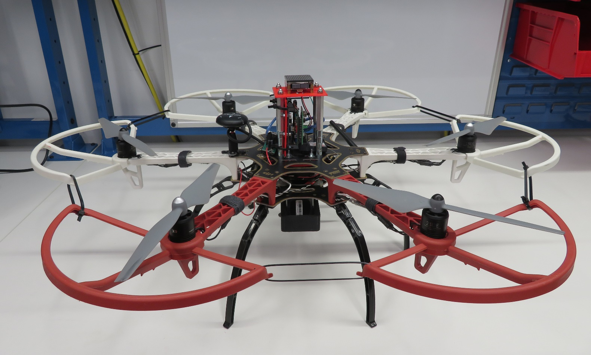
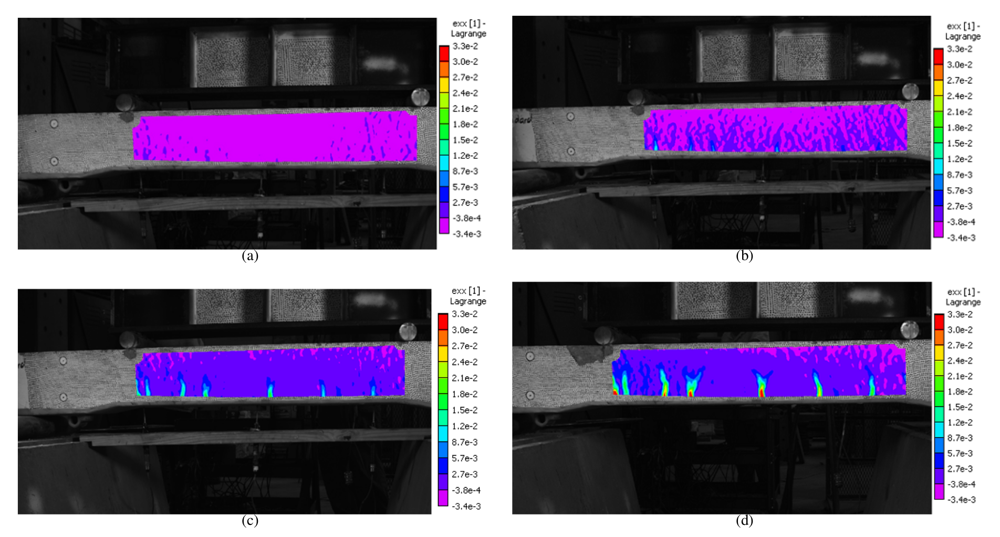
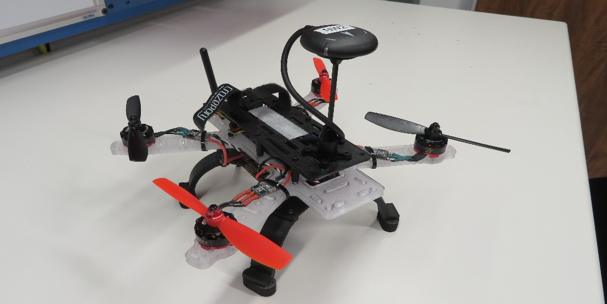
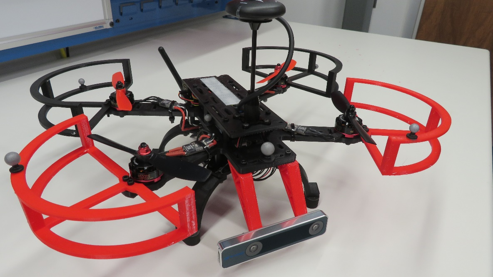
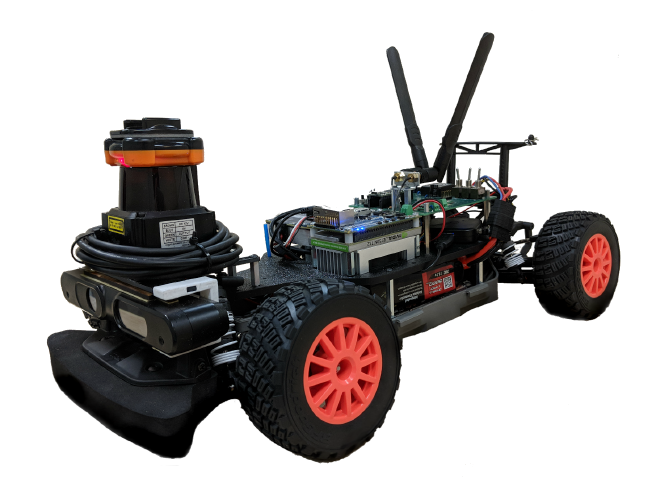

A marsupial system for freshwater ecosystems
- Team of an autonomous UAV and an autonomous ASV to extend field capabilities
- Customized landing platform (drone ferry, autonomous take-off and landing)
- Multiple-sensor fusion for state estimation for both platforms
- Cooperative localization
MagDrone

- Goal: performing contact based inspection of ferrous structures
- Electro-permanent magnet used for docking
- In the process of automating the docking process using AR tag markers and ROS on a Raspberry
Pi
Infrastructure Inspection with a DIC enabled UAS

- A 3D DIC system is mounted on the UAS
- The UAS is able to fly autonomously during the data acquisition using the onboard sensors
and position information from a marker
- The results of our experiments show the feasibility of such a system
- We were able to measure the strain fields during the loading of the beam
- The formation and progression of cracks were also captured
Custom Low-Cost MAVs

- Airframe Designed and Simulated in PTC Creo
- 3D printed out of Ultimaker Tough PLA
- PixHawk 4 Flight Controller Running PX4
- Specifications
- 3S or 4S LiPo batteries
- 2205-2300KV motors capable of 1024g thrust each
- 21 cm motor-motor distance
- 8 minute flight time with 3300 mAh battery
- Allows for loading various sensors while their size is ideal for in-doors
applications
In-Door Autonomous V-SLAM

- UAV navigation in unknown, GPS-denied environments
- Uses the in-house made drone
- 3D occupancy map of space generated live off-board
- Uses a front-facing stereo camera + IMU as the main sensor to perform VIO
- Uses a downward facing Optical Flow camera for x and y estimates where VIO isn’t sufficient
(e.g. hallways)
f1/10th Competition

- Design Autonomous RV Vehicle using open-source software and hardware
- Applications in SLAM and AV research
- Can be used to test AV systems that are dangerous to test using full size vehicles